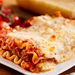

- Torta de Frango
- Lasanha a Bolonhesa
- Caldinho de Frango
Torta Salgada
Uma torta extremamente saborosa, perfeita para um lanche da tarde, é rapido para fazer e é perfeito para levar para a casa de alguém, para um encontro da igreja ou até para a seia de natal!
Lasanha a Bolonhesa
Essa é para a mesma turminha que gostou da torta de frango, mas vamos ser sinceros, quem não gosta de lasanha?!? no almoço, na janta, na seia, se tem lasanha o nosso sub-conciente já acha que é dia especial, então que tal usar minha receita para ficar mais especial ainda?
Caldinho de Frango
Uma receita facil, perfeita para aquele jantar/almoço em familia de ultima hora e se você nunca provou o verdadeiro caldo de galinha caseiro não sabe o que está perdendo. Deixe suas receitas de sopas e risotos com um sabor especial.
Quem somos
Somos uma comunidade grastrônomica liderada pela Dona Benta. Estamos fazendo o melhor para prover um site estruturado e organizado com as receitas que você já conhece. Qualquer um pode colocar uma receita no nosso site, basta entrar em contato com o telefone (69 4002-8922), ou mandar um e-mail contato@donabenta.com.br, iremos atualizar o site com as receitas mais saborosas que vocês mandarem ^^!
Ingredientes
- 1 e ½ xícara (chá) de farinha de trigo
- 3 ovos
- 300 ml de Leite Integral Frimesa
- 3 colheres (sopa) de Manteiga Frimesa sem sal
- 200 g de Queijo Mussarela Frimesa (ralado)
- 2 colheres (sopa) de óleo
- 1 colher (chá) de sal
- 1 colher (chá) de fermento em pó
- 1 tomate grande (picadinho)
- 100 g de Bacon Frimesa
- 1 lata de milho
- 1 vidro de palmito
- ½ peito de frango desfiado
- 10 azeitonas verdes (picadas)
- 100 g de Calabresa Frimesa
- 1 cebola média (picada)
- Cheiro-verde a gosto
- 200 g de Queijo Mussarela Frimesa (fatiado)
- Orégano a gosto
Modo de preparo
- Unte uma assadeira com manteiga e polvilhe farinha de trigo
- Despeje metade da massa na assadeira
- Espalhe o recheio
- forre com fatias de mussarela bem fininhas e depois despeje o restante da massa
- Salpique um pouquinho de orégano por cima
- Leve ao forno preaquecido a 180ºC por 40 a 60 minutos, dependendo da potência do seu aparelho.
- Deixe esfriar um pouco e sirva.
Ingredientes
- 1 frango inteiro (cerca de 2 kg)
- 1 cenoura
- 1 talo de salsão
- 1 cebola
- 4 litros de água
- 1 folha de louro
- 1 talo de salsinha com folhas
- 1 folha de alho-poró
- 4 grãos de pimenta-do-reino
- 100 g de Bacon Frimesa
- 3 cravos-da-índia
Modo de preparo
- Faça o pré-preparo dos legumes: lave a cenoura e o talo de salsão; descasque e corte a cenoura em 4 pedaços; reserve uma folha e corte o salsão em 4 pedaços; descasque e corte a cebola em quartos
- Junte as folhas de salsão, de alho-poró, de louro e o talo de salsinha. Amarre com um barbante de algodão para formar um buquê
- Reserve
- Retire os miúdos de dentro do frango e reserve na geladeira – você pode usar numa receita de farofa
- Corte as duas metades do peito do frango, bem rente ao osso – elas vão cozinhar por menos tempo do que o resto da ave e podem ser utilizadas em outra receita.
- Numa panela grande (ou caldeirão), coloque o frango, os cortes do peito e os pedaços de cenoura, salsão e cebola. Regue com a água para cobrir todos os ingredientes.
- Leve a panela ao fogo médio e deixe cozinhar até subir as primeiras bolhas da fervura.
- Abaixe o fogo e deixe cozinhar, sem tampar, por 20 minutos
- Com uma escumadeira, retire os cortes do peito de frango. Separe a carne da pele, volte a pele para a panela e reserve a carne na geladeira para outra receita
- Mantenha a panela em fogo baixo e deixe cozinhar por mais 1h40 – evite a fervura vigorosa, que pode dissipar o sabor dos ingredientes, além de turvar o caldo
- Durante esse período, com a escumadeira, retire e descarte a espuma que subir à superfície.
- pós as primeiras 2 horas de cozimento, acrescente o buquê de ervas, os grãos de pimenta-do-reino e os cravos. Deixe cozinhar por mais 2 horas – no total, o caldo leva 4 horas para ficar pronto
- Durante este período você não precisa ficar colado(a) no fogão: a cada meia hora dê uma olhadinha.
- Assim que o caldo estiver pronto, desligue o fogo e, com a escumadeira, retire e despreze o frango – todo o sabor e nutrientes do frango passaram para o caldo, a carne fica ressecada e sem sabor
- Sobre uma tigela grande, coe o caldo numa peneira e despreze os ingredientes
- Utilize o caldo a seguir em sopas e risotos ou deixe amornar antes de armazenar
Lasanha a Bolonhesa
Ingredientes
- ½ kg
- Molho Bolonhesa ----------
- 2 colheres (sopa) de óleo
- ½ kg de carne moída
- 1 cebola pequena picada
- 1 cenoura pequena ralada no ralo fino
- ½ xícara (chá) de salsão picado
- 1 lata de polpa de tomate
- 2 tabletes de Caldo Carne
- Molho Branco ----------
- 2 colheres (sopa) de manteiga
- 2 e meia colheres (sopa) de farinha de trigo
- ½ litro de Leite integral
- 1 pitada de noz-moscada
- 1 colher (chá) de sal
- 1 pitada de pimenta-do-reino
- 1 caixinha de creme de leite
- Montagem ----------
- 250 g de queijo mozarela fatiado
- 2 colheres (sopa) de queijo parmesão ralado
Modo de preparo
- Cozinhe a massa de acordo com as instruções da embalagem e coloque em um recipiente com água fria até o momento de montar
- Em uma panela, aqueça o óleo e refogue a carne
- Junte a cebola, a cenoura, o salsão e deixe refogar até murchar
- Acrescente a polpa de tomate e o tablete de MAGGI Caldo, dissolvido em 1 xícara (chá) de água quente. Deixe cozinhar por cerca de 10 minutos, ou até apurar o molho. Reserve.
- Em uma panela, derreta a manteiga, junte a farinha de trigo e deixe dourar. Aos poucos junte o Leite NINHO, mexendo sempre para não formar grumos
- Acrescente a noz moscada, o sal, e a pimenta-do-reino.
- Quando adquirir consistência cremosa, retire do fogo, acrescente o NESTLÉ Creme de Leite, misture bem e reserve
- Em um recipiente refratário (20 x 30 cm), coloque uma porção de molho bolonhesa; cubra com uma camada de massa, e uma porção de molho branco e coloque o queijo mozarela. Repita as camadas até a borda do recipiente.
- Finalize com o queijo parmesão ralado e leve ao forno alto (220°C), preaquecido, por cerca de 20 minutos ou até dourar. Sirva e bom apetite!